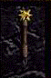

| Original Name | Nom Français |
| Morningstar of the Sun | Fléau d'armes du Soleil |
|
 |
|
| Lieu |
| Stoneheim - |
| Bonus |
| +10 Sag, +10 Resist Necro, +10 Puiss Lumière, Sun's Ray, 115-162 de dégats contre les morts-vivants |
| Commentaires |
| 4 Commentaires |
|
Lynos
Messages: 133 |
- Est-ce que sa vaut le coup de monter 140 de force a mon pretre pour cette arme?
Posté le : 12-10-2003 13:06:39 |
|
Eyolf Wotan
Messages: 11 |
- Pour le skin si tu veux, mais pour pretre, bof, vu que ça boost que la lumiere, pour repouss vaut mieux pas ... Pour pala c'est indispensable  vu que c'est sur le chemin vu que c'est sur le chemin 
Posté le : 19-10-2003 11:34:07 |
|
Darkaal
Modérateur du Général et Liens Utiles
Messages: 975 |
- Pour un prêtre-healer c'est quand même très pratique. Je me souvient d'un prêtre lvl 150 full lumière avec le fléau qui passait le plus clair de son temps à la liche et bien on était bien content de l'avoir dans notre groupe. En plus il portait toujours une bonne quantité de pierre vu sa force
Posté le : 27-10-2003 12:24:40 |
|
maldyouk
Messages: 1 |
- A mon avis tres utile, pour son heal qui vient en renfort des anneaux et de l'aura seraph contre un burster 4 fois plus de chance de se faire guerir et le bracelet de flamme fais le reste du boulot. A avoir absolument pour les fans de pvp de masse et les licheurs
Posté le : 25-04-2004 17:41:59 |